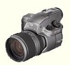

 Pixal's DC500 is designed for the serious amateur or professional photographer. The DC500 supports a progressive scan 1.5 square pixel CCD with image resolutions up to 1344x1022. A manual zoom lens and focus ring allow for more accurate images.
For low-light conditions, you can set the attached pop-up flash to work in one of four different modes: Automatic, On, Off, or Hot Flash. The automatic mode will turn on the flash automatically when the DC500 senses low-light conditions. The Hot Flash mode allows you to work with an external flash and strobe lights.